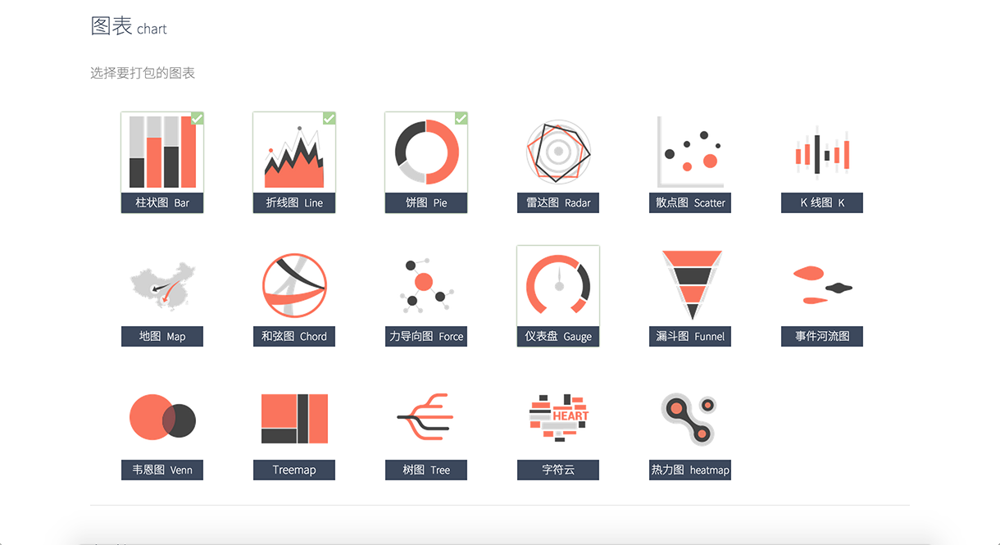
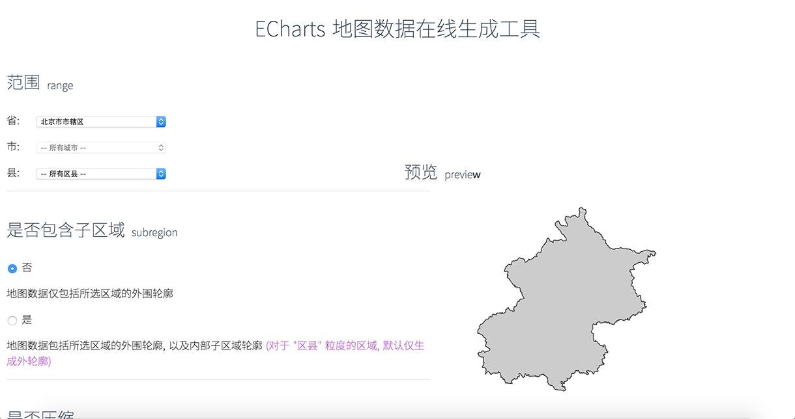

2015秋职称评定述职
沈毅
自我介绍

- 2012 / 07 入职
- 2D 和 3D 图形，可视化开发
- EFE-TC Data Visualization
- W3C Data Visualization Community Group
- 上次晋升：1年前
2014 - 2015 主要负责和参与的项目
- ECharts 和 ZRender 维护
- 负责人物图谱前端开发
- WebGL 框架 QTEK 的维护
- ECharts-X 开发以及 Grapher.js
- 展厅大屏
ECharts 和 ZRender
- ZRender 维护和优化
- ECharts 工具链
- ECharts 中 Bug 修复以及功能改进
ZRender 优化 - 图形扩展
问题
-
图形扩展麻烦
需要每个图形自己实现判断是否和鼠标坐标相交
- 复杂图形判断不精确
方案
- Path2D 抽象
代理路径绘制
路径绘制数据存储
包围盒计算
点在图形上的精确判断
- JavaScript 实现完备的点在图形上的精确判断
绘制模式：Fill, Stroke
路径：Bezier, Arc, Line
结构图
优点
-
性能
根据图形的复杂度，是 Native 方式的十几倍到几十倍
-
扩展方便
不用再关心如何计算包围盒和判断相交
-
只依赖路径数据
可以在 Node 上使用
性能
性能对比
ZRender 优化 - 多个渲染模块
- Canvas - 高性能
- SVG - 移动
- VML - IE8
架构图
在线打包工具
对前端不熟悉的用户打包困难，默认的非 AMD 模块代码包太大

在线地图数据生成工具
用户觉得地图数据老旧，数据更新量大，更新频繁

人物图谱 - 娱乐圈人物关系的聚合展现
- 没有可以参考的产品
- 从无到有确定展现方案和交互细节
关系图布局 - 目标
力引导布局算法优化
-
树形预布局
不同高度子树的均匀分布
-
带约束的里引导布局
层方向上的力约束
节点和边的斥力
配图说明
其它细节
- 丰富的交互动画
- 优化
分层渲染
对屏幕外的图形裁剪
- 屏外节点的标签提示
数据
搜狗的人物图谱
Canvas 瓶颈
-
能够实时展现的图形在千级别
Trick：像素操作
- 主要用于展现二维

ECharts-X
- 能够实时展现几万到几十万的数据
- 效果更吸引眼球
- 三维数据可视化
技术点
- 整合 2D 和 3D 图形的绘制和管理
- GPU 加速的动画和粒子特效
- 大数据的展现优化
- 日照信息表现
- ...
整合 2D 和 3D 图形的绘制和管理
架构图
向量场粒子特效
实现思路
效果
日照表现
Grapher.js
Wise 端数学公式的 3D 展现
-
体积控制
QTEK 模块粒度和依赖小，最后打包 150k
Three.js 400k+
- 移动端支持多浏览器
Canvas 绘制3D
Grapher.js
演示
接下来 - ECharts 重构
- 移动版优化，代码体积，崩溃
- 更易于扩展新的可视化手段
- 方便开发人员扩展
- 深度集成 3D
谢 谢！